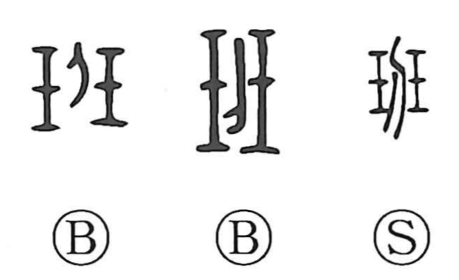

班

Kun: | On: han
group ・ squad ・ section ・ to divide ・ to allot
Explanation
班 is formed by combining 玨—two jade pieces bound together—with 刀, the knife. 玨 evokes a paired, precious jade; adding the blade shows that jade being cut and apportioned. Early lexicons gloss it as dividing auspicious jade, and from this core image come senses of dividing and distributing, seen in terms like 班給 (to allot) and 班田 (allotted fields). By extension, 班 became the word for a unit created by dividing people into working groups, as in 班長, the leader of such a group. The character also appears alongside 斑 in expressions like 班白, evoking variegation—the mingling of hues like those within a piece of jade.